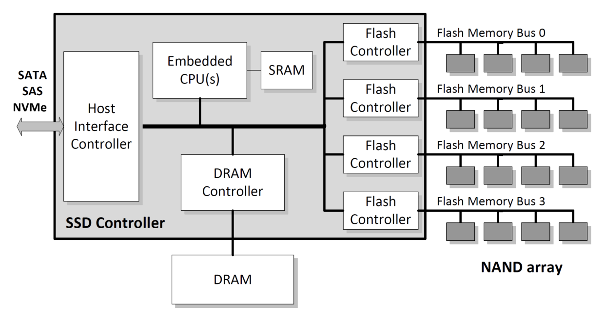
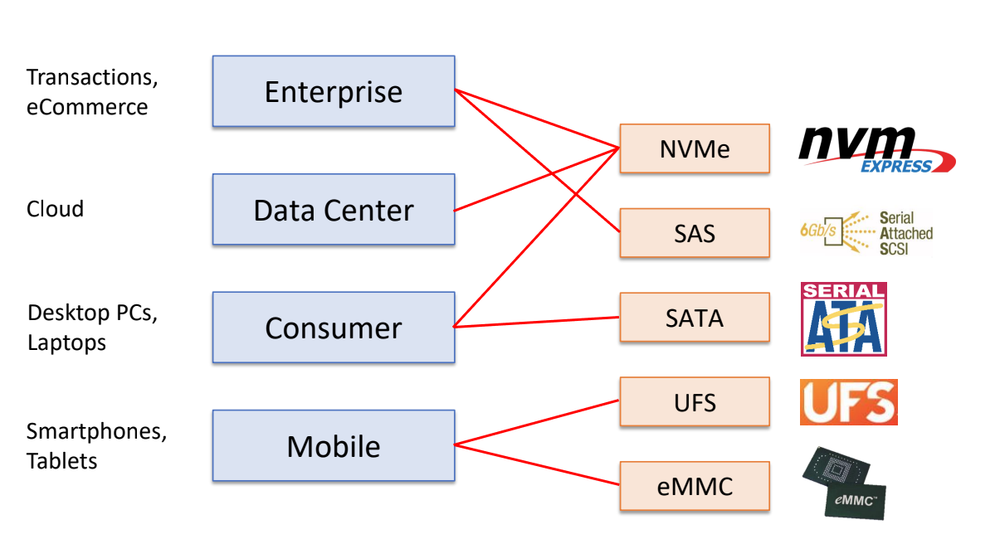
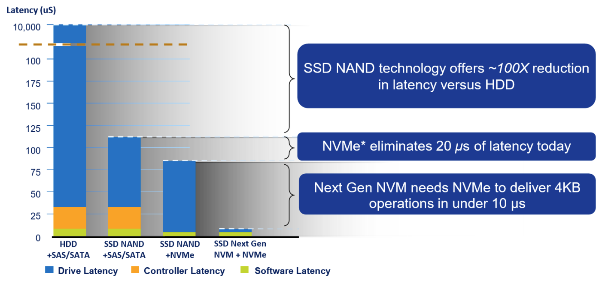

서울대학교 컴퓨터공학과 김진수 교수님의 "고급 운영체제" 강의를 필기한 내용입니다.
다소 잘못된 내용과 구어적 표현 이 포함되어 있을 수 있습니다.
Non-volatile storage 역사
- 솔직히 몰라도 될 것 같다.
- ROM: read-only-memory
- EEPROM: ROM 을 write 가능하게 만든 것
SSD 구조

- Host interface controller 에서 사용자 입력을 받아들임 - 뭐 PCIe, SATA 컨트롤러 등이겠지
- CPU 와 캐시처럼 사용할? SRAM 이 있고
- DRAM 이 있는데 여기에는 DRAM Controller 를 거쳐서 간다.
- 하나의 실리콘 판떼기를 Die 라고 한다.
- Die 들은 Channel (혹은 Bus) 로 연결되어 있다
- Chip 에는 여러 Die 가 들어있다
- Channel 들은 SSD Controller 의 Flash Controller 에 붙어있다
- 데이터를 여러개로 쪼개서 여러 Channel 에 뿌린다고 한다.
- 하나의 Channel 에 있는 여러 Die 는 마치 CPU pipeline 처럼 작동한다고 한다.
- 한 Die 에서 처리하는 동안 그 옆의 Die 가 다른 일을 할당받고?#draft
Host interface
- SSD 가 아무리 좋아도 interface 에서 병목이 생길 수 있기 때문에 interface 도 변화해 왔다
- 성능은
- SATA < SAS < PCIe < (Intel) Optane/Samsung Z-SSD < DRAM

- Enterprise: 성능을 위해 NVMe 를 쓰고, 이전에는 SCSI 를 많이 사용했기 때문에 SAS 도 여전히 많이 사용한다.
- Data Center(Cloud): Cost 에 민감하기 때문에 NVMe 를 쓴다
- Consumer: 부팅 디바이스로 NVMe, 서브디스크로 SATA 를 마니 사용
- Mobile: Flagship 은 UFS, entry 는 eMMC 사용
NVMe
- Intel 주도의 PCIe 버스에 storage 를 붙이기 위한 표준
- 대충 pain point 는
- CPU 에는 PCIe 버스가 있는데
- 이 PCIe 에는 HBA (Host Bus Adapter) 가 있어서 여기에 SATA 나 SAS 등을 붙이는 방식으로 storage 를 연결해 왔었다.
- 하지만 이렇게 하지 말고 PCIe 에 SSD 를 바로 붙여보자는게 NVMe 의 기본 아이디어
- 이렇게 PCIe 를 통해 CPU 에 바로 붙게 되기 때문에 HBA 가 필요없어 전력소모/가격에서의 이점이 있다.
- PCIe 는 lane 당 1GB/s 정도 대역폭이 나오는데
- SSD 의 경우에는 보통 4 lane 을 사용한다. 즉, 4GB/s 정도로 매우 빠르다는 것이지.
- 추가적으로, PCIe 는 최대 32 lane 까지 있기 때문에 확장성이 좋다는 장점도 있다.
- 저장 매체와 interface 의 변화에 따라 latency 가 다음과 같이 변화해 왔다고 한다.

- 보통은 Latency 는 Driver (저장매체 특성에 따른 latency) 가 제일 크고, 그 다음에는 Controller (Interface 에 따른 latency), 마지막으로는 Software (block layer, 즉 Filesystem 등) 순서로 작아지는데
- 저장매체가 HDD 에서 SSD 로 넘어갈때 Driver latency 가 매우 줄어들었고
- 인터페이스가 SATA/SAS 에서 NVMe 로 넘어갈 때 Controller latency 가 매우 줄어들었다고 한다.
- 위 그림에서 맨 오른쪽은 차세대 (즉, 아직은 개발/상용화 되지 않은) 저장매체를 말하는 것
- 요즘은 SPDK 를 이용해 kernel 을 bypass 해서 디바이스에 접근해 이 Software latency 를 줄이는 시도도 한다고 한다.
Overview
#draft Record 25" ~ 38", PPT 16~18p
- NVMe 에는 꼭 필요한 13개의 command 들만 있었지만 지금은 역시 뭐가 많이 붙어서 많다고 한다.
Form factor
- 기본 PCIe (Add-in-Card: AiD) 랑 M.2 정도가 있고
- EDSFF (Enterprise and Data center SSD Form Factor) 라고 해서 Enterprise 용으로 E 로 시작하는 애들도 있다더라
- eMMC (embedded Multi Media Card): 모바일을 위한 SSD
- 여기에는 부피를 줄이기 위해 DRAM 을 없앴다고 한다.
- Packed command: read 두개, write 두개 이런식으로 두개씩 쌍으로 처리
- UFS (Universal Flash Storage): SD 카드 비슷한 거랜다.